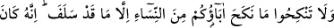
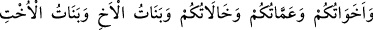
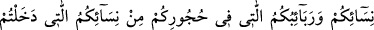
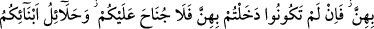
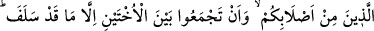
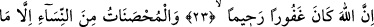
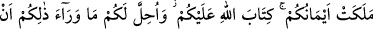
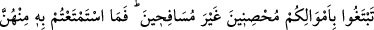
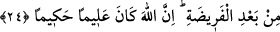

EVLENİLMESİ
HARAM OLAN KADINLAR
22- Geçmişte olanlar bir yana, babalarınızın evlendiği kadınlarla evlenmeyin;
çünkü bu bir hayâsızlıktır, iğrenç bir şeydir ve kötü bir yoldur.
23- Analarınız, kızlarınız, kızkardeşleriniz, halalarınız, teyzeleriniz, kardeş
kızları, kız kardeş kızları, sizi emziren analarınız, süt bacılarınız, eşlerinizin
anaları, kendileriyle birleştiğiniz eşlerinizden olup (evlerinizde) bulunan üvey
kızlarınız size haram kılındı. Eğer onlarla (nikâhlanıp da) henüz birleşmemişseniz
kızlarını almanızda size bir mahzur yoktur. Kendi sulbünüzden olan oğullarınızın
eşleri ve iki kız kardeşi birden almak da size haram kılındı; ancak geçen geçmiştir.
Allah çok bağışlayıcı ve esirgeyicidir.
24- (Harp esiri olarak) sâhip olduğunuz câriyeler müstesnâ, evli kadınlar da size
haram kılındı. Allah’ın size emri budur. Bunlardan başkasını, namuslu olmak ve zinâ
etmemek üzere mallarınızla (mehirlerini vererek) istemeniz size helâl kılındı.
Onlardan faydalanmanıza karşılık kararlaştırılmış olan mehirlerini verin. Mehir
kesiminden sonra (bir miktar indirim için) karşılıklı anlaşmanızda size günah
yoktur. Şüphesiz Allah ilim ve hikmet sahibidir.